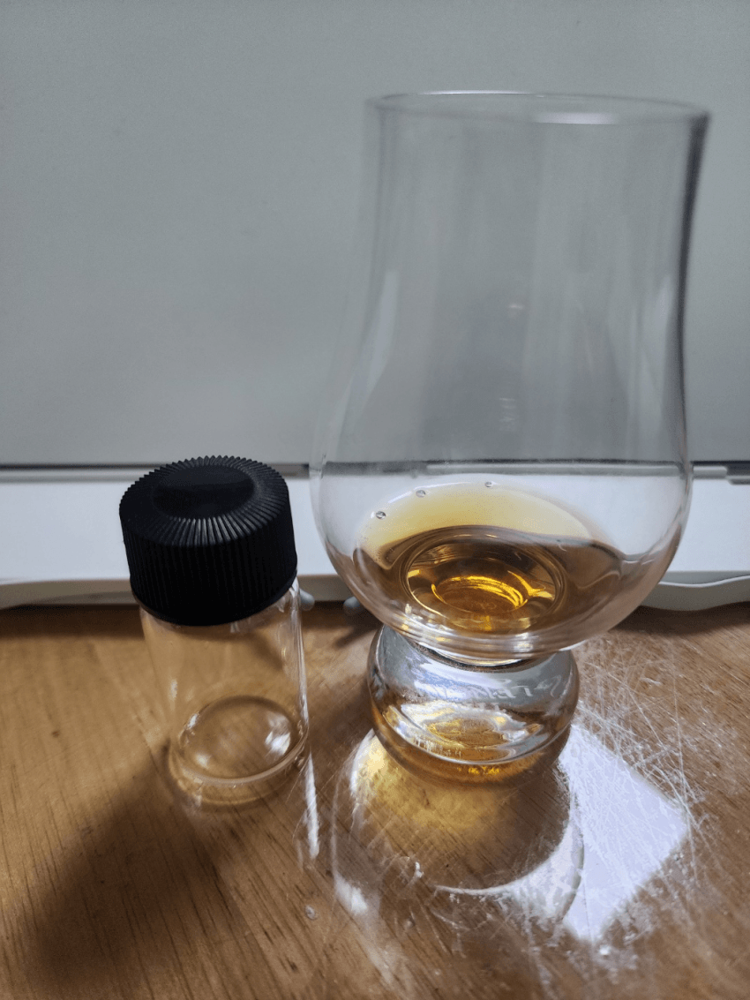

N
알콜이 약간 느껴지며 진짜 고추장의 매운 맛이 느껴진다.
뭔가 과자 중에서 꼬깔콘 매콤달콤한 맛에서 나는 향이 그대로 느껴진다.
좀 고추장에 익숙해지면 버번 같은 꿀, 바닐라, 서양배 같은 향이 느껴진다.
P
청사과, 배 같은 맛이 나다가 점점 고추장의 맛이 난다.
버번의 달달함과 고추장, 그리고 약간 몰티한 맛이 섞이니 진짜 꼬깔콘 매콤달콤한 맛이 난다.
입에 머금을수록 점점 고추장 특유의 맛이 강렬해진다.
F
목이 알콜 도수 때문에 뜨거운 게 아니라 고추장 매운 맛 덕분에 뜨끈뜨끈하다.
단 맛은 없고 오직 매운 맛만 남는다.
매운맛이 좀 가라앉을 때 미약한 버번의 바닐라향이 남고 끝난다.
그냥 꼬깔콘 매콤달콤한 맛을 술로 만들면 이게 아닐까 싶음.
198000원이였다는데 12? 정도면 한 번 생각해봤을 듯.
악평 대비 꽤 맛있었다.
교역해주신 Kirel님께 감사드립니다!